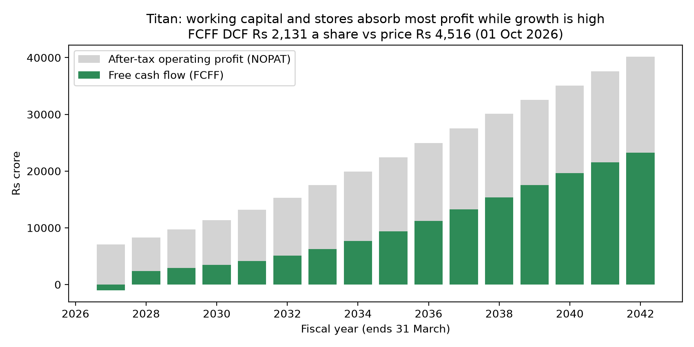
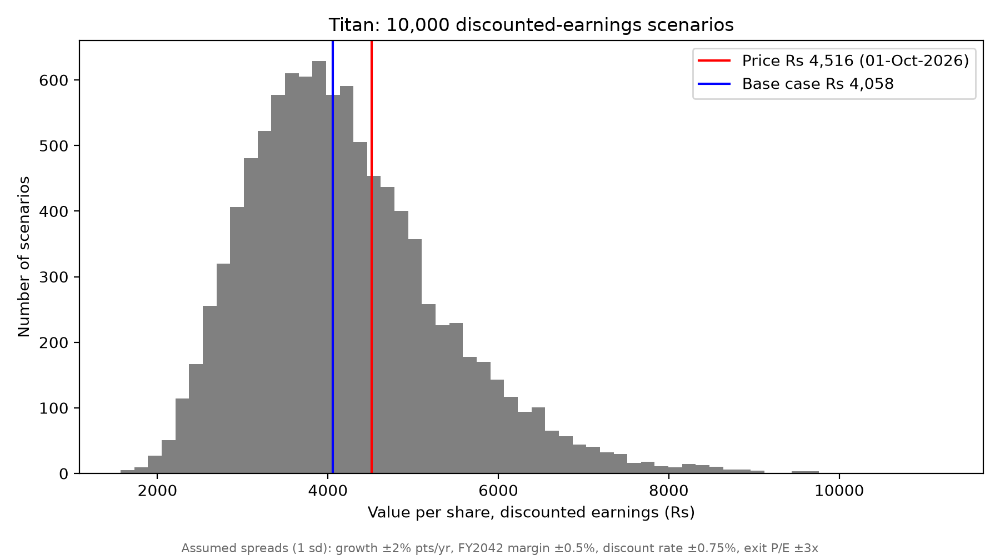
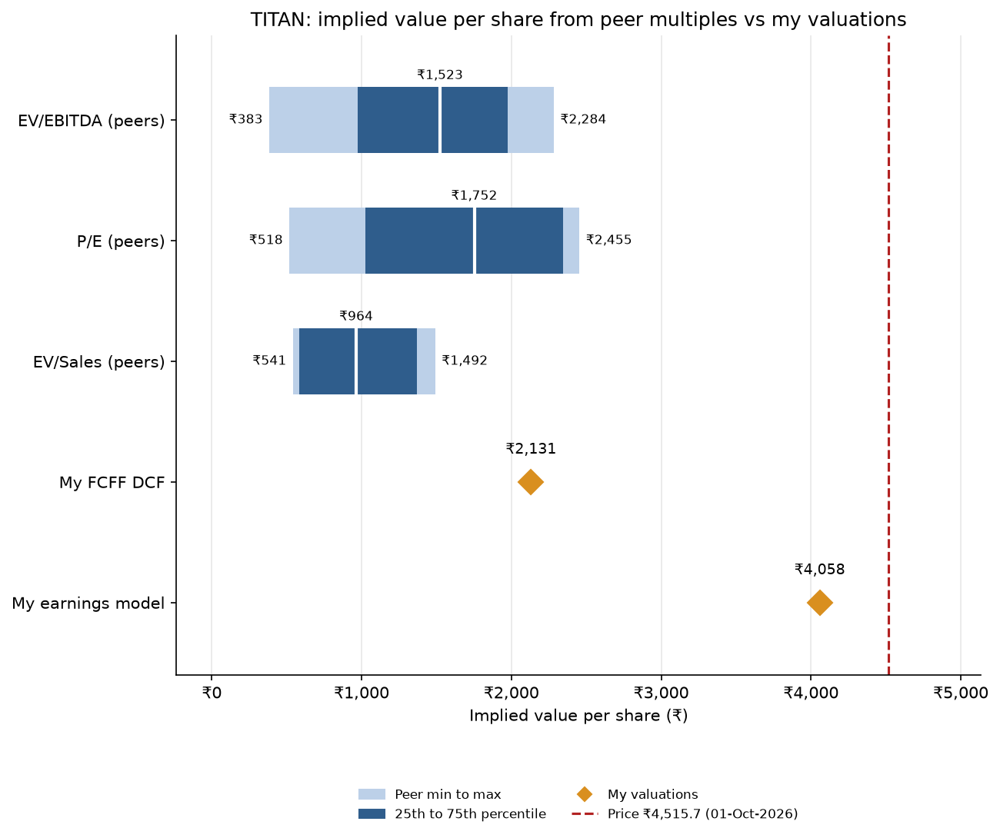
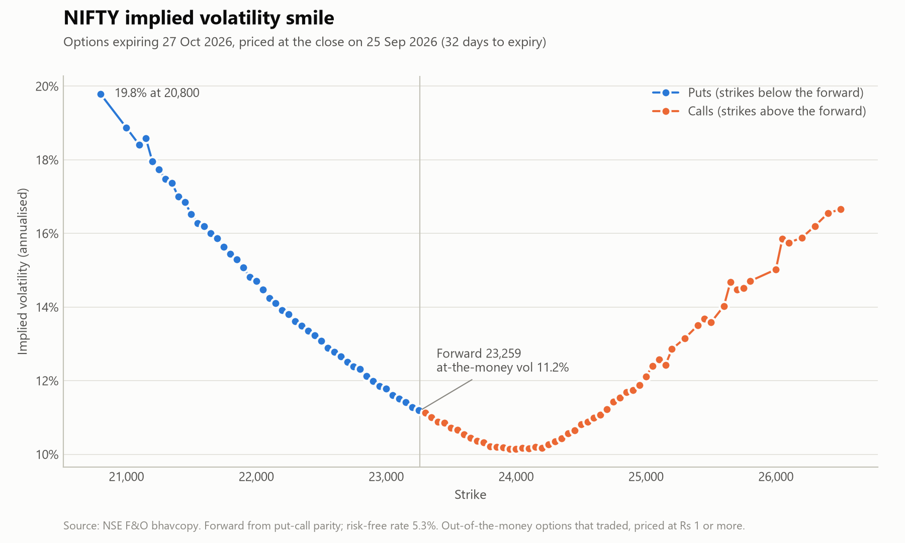

Titan Company: Equity Valuation and Risk Analysis
Two valuations of Titan Company (NSE: TITAN), each built in Excel and in Python on the same revenue forecast: a free cash flow (FCFF) DCF, and a discounted-earnings model with a Monte Carlo simulation, a tornado chart and a reverse valuation of the growth the price implies.
- FCFF DCF: 10.08% WACC, 6% terminal growth, margins and reinvestment from Titan's FY2022–FY2026 history. Only 46% of after-tax operating profit becomes free cash flow over FY27–FY42, because growth ties up gold inventory and new stores.
- Gold on loan is treated as operating funding in the base case, with an assumed 2% cost. Treating it as debt instead gives ₹1,639.
- Earnings model: 10.26% cost of equity and a 26.5x exit P/E. The 10,000-run Monte Carlo has a 90% range of ₹2,631 to ₹6,358, and 34% of runs land above the price.
- The Excel sheets reproduce the Python values exactly, and 10 unit tests run on every push.


Student research for education only; not investment advice.
Jewellery Peer Comps: Titan vs Listed Jewellers
Trading comparables that cross-check the Titan valuation above against what the market pays for listed Indian jewellers: Kalyan, Senco, Thangamayil and P N Gadgil, with Trent shown separately for reference. Financials come from Screener.in exports and prices from NSE's bhavcopy.
- Computes EV/EBITDA, P/E and EV/Sales on the latest fiscal year or the last twelve months, plus margins, ROCE, ROE and inventory days.
- Titan trades at about 2.6x the peer medians. All three peer-multiple methods imply values well below the ₹4,515.7 price on 1 Oct 2026, so the market pays a premium the jewellers' multiples do not explain. My FCFF DCF (₹2,131) lands just above the peer ranges.
- Titan's ROCE (16.3%) sits inside the peer range; what stands out is its size and its 4.9x EV/Sales, closer to Trent than to the jewellers.

Trailing multiples only, net debt unadjusted, four core peers. Student research for education only; not investment advice.
Options Pricer
Option pricing in Python, built from first principles and tested against theory, then applied to real NIFTY option prices from NSE.
- Black-Scholes-Merton with the Greeks, a binomial tree for American options, and Monte Carlo simulation with variance reduction (antithetic variates).
- An implied volatility solver using Brent's method, applied to NSE closing prices on 25 Sep 2026.
- The smile shows the market paying up for protection against a fall: 11.2% at the forward, 19.2% for strikes 10% below it.

Other Work
campaign-clipper: a Python pipeline (yt-dlp, faster-whisper, ffmpeg) that turns long-form footage into vertical shorts and checks each clip against a paid campaign's rules (brand spelling in the captions, length, loudness, banned words, upload size) before anything is submitted.